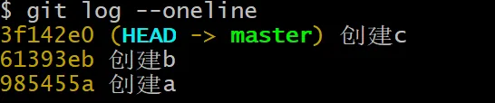
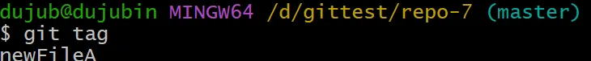
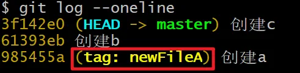
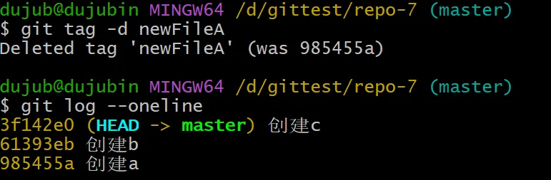
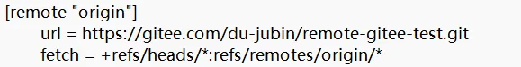
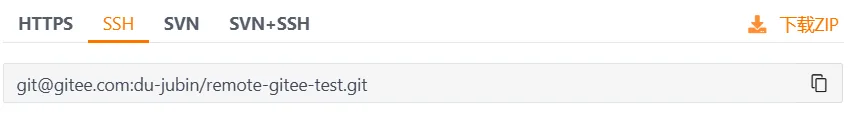
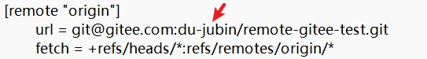

git commit -m 解决冲突

---
## 标签操作
### 为什么需要标签
目的是：语义化，增强可读性，增强可维护性。
打标签本质上是给某个提交记录起别名。
### 查看当前仓库中有哪些标签
```shell
git tag
当你没有创建任何标签时，什么也不会输出。
创建一个新的仓库：
mkdir repo-7
cd repo-7
touch a.txt
git add a.txt
git commit -m 创建a
touch b.txt
git add b.txt
git commit -m 创建b
touch c.txt
git add c.txt
git commit -m 创建c
git log --oneline

为创建 a 这一次的提交打一个标签：
git tag newFileA 985455a
再次查看标签，此时当前分支中就有一个标签了：
git tag

git log --oneline

而且也可以通过下面的命令查看某个标签之前的所有历史提交记录了：
git log newFileA
git tag -d newFileA
删除之后，标签就没有了：

我们之前可以根据历史提交 id 来创建分支，当然也可以通过标签名来创建分支：
git checkout -b haha newFileA
将远程仓库的项目 clone 到本地：
git clone https://gitee.com/du-jubin/remote-gitee-test.git
打开克隆的项目，找到 **.git/config**文件，如下：

其中 url 就是远程仓库的地址。但实际开发中，很多公司（尤其是注重安全和内部网络管理的）不提供或不推荐使用 HTTPS 协议访问 Git 仓库，而是仅提供 SSH 协议咱们来模拟一下，一些公司只提供 SSH 的场景：第一步：**找到远程仓库的 SSH 链接，如下，拷贝 SSH 地址

第二步：将 SSH 地址修改到 config 文件中

第三步：在本地工作区中创建文件，并添加到暂存区，提交到本地仓库
cd remote-gitee-test/
touch Test.java
git add Test.java
git commit -m 提交Test
第四步：push 到远程仓库
```shell